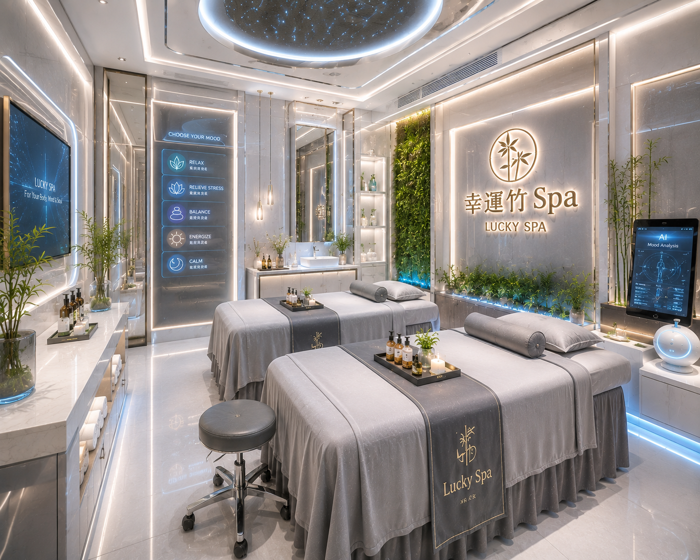
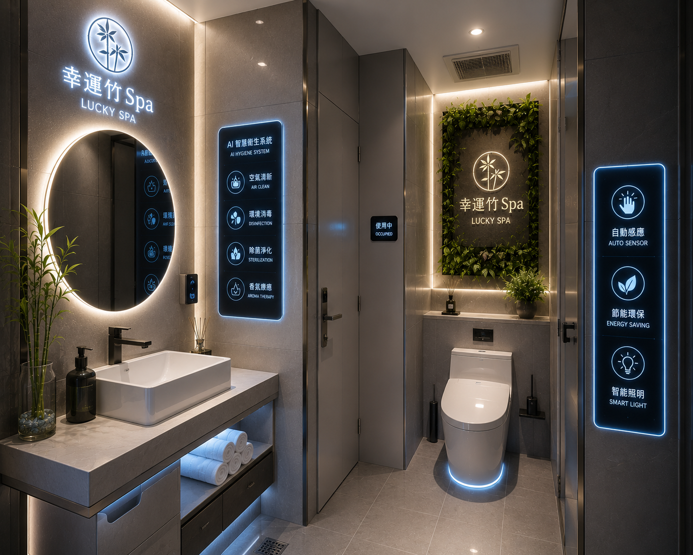
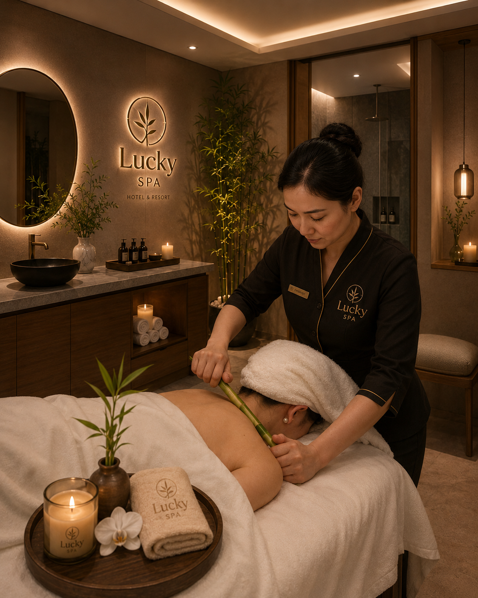
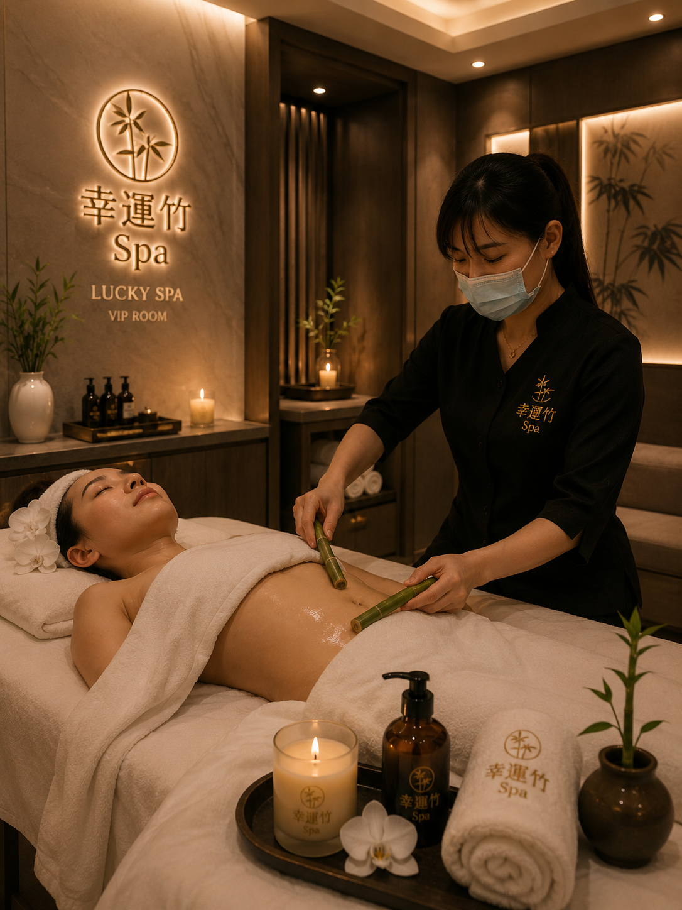
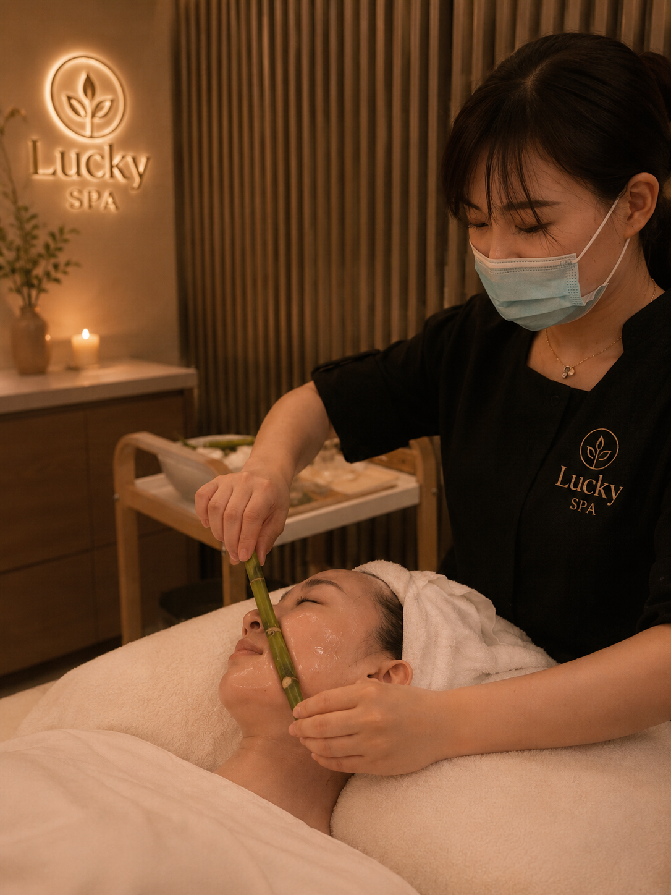

Face treatment
臉部課程
60-90 分鐘- 迎賓放鬆背部放鬆、肩頸安撫，讓身體先降速。
- 清潔整理卸妝、清潔、去角質、蒸臉與粉刺整理，依膚況調整。
- 幸運竹手技熱蘊竹節搭配頸肩、前胸淋巴、手部與頭部放鬆。
- 修護收尾導入、敷臉與保養品，讓膚況回到穩定光澤。
讓幸運不只停在祝福，而是成為手上的溫度、香氣與服務秩序。
面向科技與 AI 團隊時，真正建立信任的不是炫目的介面，而是乾淨、準時、可說明的服務流程。接球遊戲只是入口，讓顧客更容易說出今天的狀態。





幸運竹取其生命力、向上、潔淨與節節高陞的意象；服務上，則以竹節梳理經絡氣結，搭配芳香精油、身體觀察與部位判斷，形成台灣式 SPA 語言。
臉部、身體、精油與竹節手法，會依膚況、緊繃與當季感受安排。名稱要有記憶點，服務更要落在身體上。
以季節、膚況、循環與壓力位置作為判斷，安排臉部光澤、背肩釋放、腿部代謝、腹部曲線或能量調理。
整理臉部氣色，帶出乾淨明亮感。
釋放背肩承載，讓呼吸變深。
帶動腿部循環，找回輕盈步伐。
整理胸口與上身淋巴，打開胸廓。
照顧腹部曲線與消化型緊繃。
去角質與膚觸整理，為夏日留白。
淨化雕塑，讓身體線條回到順流。
梳理代謝節奏，減少身體沉重感。
平衡脈輪與情緒張力，穩住內在節奏。
保濕抗老，讓肌膚回到柔潤支撐。
以能量按摩鬆開累積壓力。
年度會員調理，整理整年保養節奏。